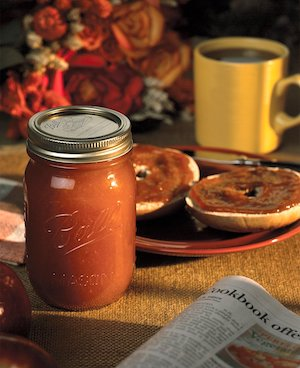

Apple Butter

Description
Apple butter is an excellent accompaniment for roast pork or a wonderful
substitute for jam or jelly on your morning toast. Also, it is amazing
on waffles!
Ingredients
- 4 pounds of apples (about 12 to 16 medium)
- 2 cups water
- 4 cups sugar
- 1 1/2 to 2 teaspoons cinnamon
- 1/4 teaspoon cloves
- 1/4 teaspoon nutmeg
Steps
- Core and peel apples, if desired. Cut apples into quarters.
- Combine apples and water in a large saucepan. Cook apples at a simmer until soft. Puree mixture using an electric food strainer or food mill. Measure 2 quarts of apple pulp; return apple pulp to saucepan. Add sugar and spices, stirring until sugar dissolves. Cook at a gentle boil over medium heat until apple mixture is thick enough to mound on a spoon, stirring frequently to prevent sticking. If mixture becomes too thick, add a small amount of water or apple juice for desired consistency. Remove from heat.
- Ladle hot apple butter into a hot jar leaving a ¼ inch headspace. Remove air bubbles. Wipe jar rim. Center lid on jar and apply band, adjust to fingertip tight. Place jar in boiling water canner. Repeat until all jars are filled.
- Process jars 15 minutes, adjusting for altitude. Turn off heat, remove lid, let jars stand 5 minutes. Remove jars and cool 12-24 hours. Check lids for seal, they should not flex when center is pressed.